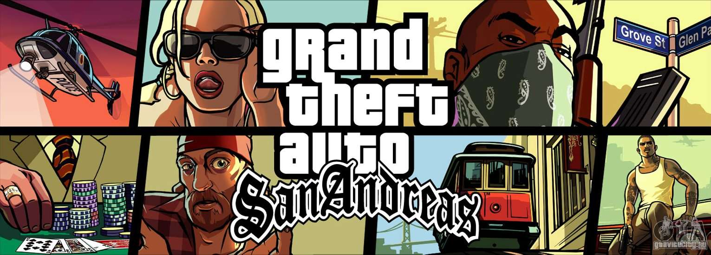
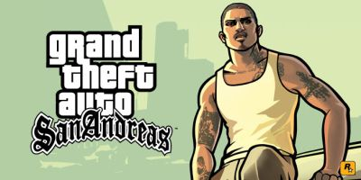
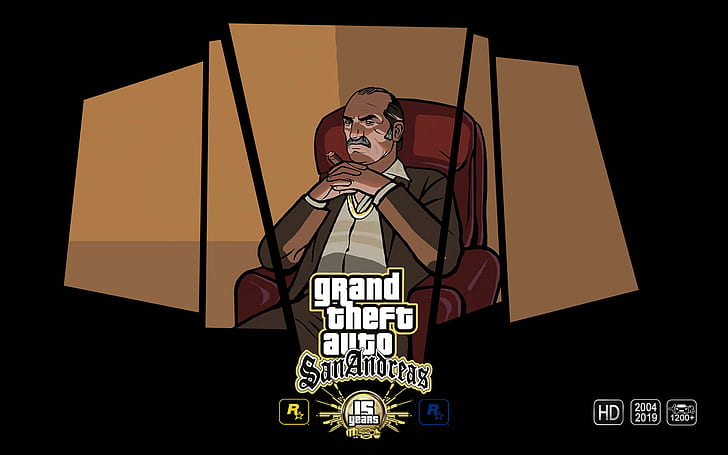

Grand Theft Auto: San Andreas (скор. GTA: San Andreas або GTA: SA) — відеогра у жанрі action-adventure, розроблена Rockstar North та видана компанією Rockstar Games в 2004 році. Це сьома за рахунком і третя тривимірна гра у франшизі Grand Theft Auto. Для консолі PlayStation 2 гра була випущена 26 жовтня 2004 року в Північній Америці та 29 жовтня 2004 року в Європа і Австралія. У варіантах для Windows і Xbox гра з'явилася 7 червня 2005 року в Північній Америці та 10 червня 2005 року в Європа; версії гри для Xbox 360 і PlayStation 3 було видано у 2008 та 2012 роках відповідно; у 2013-2014 роках відбувся випуск версій гри для мобільних ОС (iOS, Android, Windows Phone і Fire OS). 11 листопада 2021 року відбувся реліз збірки ремастерів Grand Theft Auto: The Trilogy — The Definitive Edition, до якої увійшла оновлена версія GTA: San Andreas
Події відбуваються у вигаданому американському штаті Сан-Андреас, який базується на Каліфорнії та Неваді. Штат Сан-Андреас складається з трьох міст: Лос-Сантоса, заснованого на Лос-Анджелесі; Сан-Фієрро, заснованого на Сан-Франциско та Лас-Вентурасі, заснованого на Лас-Вегасі. Історія слідує за Карлом Джонсоном або «Cj», колишнім бандитом, який повертається додому в Лос-Сантос з Ліберті-Сіті після звістки про вбивство матері. Карл знаходить своїх старих друзів і сім'ю в розгубленні, і в ході гри він намагається відновити свою стару банду, має сутички з корумпованими копами і поступово розгадує правду, що стоїть за вбивством матері. Сюжет базується на кількох подіях у реальному житті Лос-Анджелеса, включаючи суперництво між вуличними бандами Bloods, Crips та Hispanic, епідемію креку 1980-1990-х,
 Структура геймплея GTA: San Andreas аналогічна двом попереднім іграм серії. Основна дія складається з елементів екшену від третьої особи і автомобільного симулятора у великому і відкритому для дослідження ігровому світі. Поза транспортного засобу головний герой, керований гравцем, може ходити, бігати, стрибати, лазити і плавати (в попередніх серіях останніх 2 можливостей не було), а також використовувати зброю і битися врукопашну. Гравці можуть викрасти і використати безліч різноманітних засобів пересування, включаючи автомобілі, мотоцикли, мопеди, квадроцикли, велосипеди, катери, літаки, вертольоти, судна на повітряній подушці, поїзди і навіть реактивний ранець.
Відкритий світ дозволяє гравцям вільно подорожувати і вибирати, чим вони будуть займатися в Сан Андреасі. Для того, щоб пройти гру і відкрити доступ в нові міста, необхідно виконувати сюжетні місії, в іншому ж вони необов'язкові і можуть бути завершені в будь-який час. Поза місій гравець вільний у діях, і може здійснювати багато протизаконних в реальному світі вчинків: вбивати перехожих і поліцейських, грабувати їх, висаджувати в повітря автомобілі тощо. Однак такі дії привертають увагу влади, і за головним героєм починають полювати стражі правопорядку. Чим більше злочинів скоюватиме гравець, тим більші сили залучаються для його затримання: невеликі провини намагається залагодити місцева поліція, в той час як на вищих рівнях розшуку злочинця зустрічають команди спеціального призначення і навіть військові підрозділи з підтримкою важкої броньованої техніки й повітряним супроводом у вигляді винищувачів і поліцейських вертольотів.Також гравець може досліджувати можливості гри, знаходячи секрети від розробників, грати в міні-ігри і виконувати другорядні місії. Традиційні для серії несюжетні завдання були включені і в GTA: San Andreas — гравець може попрацювати таксистом, розвозячи пасажирів, стати пожежником і гасити палаючі автомобілі, доставляти постраждалих людей в лікарню, а також боротися з злочинністю в ролі борця за справедливість. За успішне виконання завдань головний герой отримує винагороду. З'явилися і нові місії (серед яких професії далекобійника, машиніста поїзда та кур'єра, що вимагають від гравця доставки вантажу за обмежений час), а також школи навчання водінню автомобіля і мотоцикла, пілотуванню і управлінню катерами, які допомагають гравцям знайти необхідні навички для використання відповідного транспорту. На відміну від Vice City і GTA III, в яких при перетині кордонів районів міста з'являвся завантажувальний екран, Сан-Андреас являє собою «безшовний» світ, в якому гравець може .
Структура геймплея GTA: San Andreas аналогічна двом попереднім іграм серії. Основна дія складається з елементів екшену від третьої особи і автомобільного симулятора у великому і відкритому для дослідження ігровому світі. Поза транспортного засобу головний герой, керований гравцем, може ходити, бігати, стрибати, лазити і плавати (в попередніх серіях останніх 2 можливостей не було), а також використовувати зброю і битися врукопашну. Гравці можуть викрасти і використати безліч різноманітних засобів пересування, включаючи автомобілі, мотоцикли, мопеди, квадроцикли, велосипеди, катери, літаки, вертольоти, судна на повітряній подушці, поїзди і навіть реактивний ранець.
Відкритий світ дозволяє гравцям вільно подорожувати і вибирати, чим вони будуть займатися в Сан Андреасі. Для того, щоб пройти гру і відкрити доступ в нові міста, необхідно виконувати сюжетні місії, в іншому ж вони необов'язкові і можуть бути завершені в будь-який час. Поза місій гравець вільний у діях, і може здійснювати багато протизаконних в реальному світі вчинків: вбивати перехожих і поліцейських, грабувати їх, висаджувати в повітря автомобілі тощо. Однак такі дії привертають увагу влади, і за головним героєм починають полювати стражі правопорядку. Чим більше злочинів скоюватиме гравець, тим більші сили залучаються для його затримання: невеликі провини намагається залагодити місцева поліція, в той час як на вищих рівнях розшуку злочинця зустрічають команди спеціального призначення і навіть військові підрозділи з підтримкою важкої броньованої техніки й повітряним супроводом у вигляді винищувачів і поліцейських вертольотів.Також гравець може досліджувати можливості гри, знаходячи секрети від розробників, грати в міні-ігри і виконувати другорядні місії. Традиційні для серії несюжетні завдання були включені і в GTA: San Andreas — гравець може попрацювати таксистом, розвозячи пасажирів, стати пожежником і гасити палаючі автомобілі, доставляти постраждалих людей в лікарню, а також боротися з злочинністю в ролі борця за справедливість. За успішне виконання завдань головний герой отримує винагороду. З'явилися і нові місії (серед яких професії далекобійника, машиніста поїзда та кур'єра, що вимагають від гравця доставки вантажу за обмежений час), а також школи навчання водінню автомобіля і мотоцикла, пілотуванню і управлінню катерами, які допомагають гравцям знайти необхідні навички для використання відповідного транспорту. На відміну від Vice City і GTA III, в яких при перетині кордонів районів міста з'являвся завантажувальний екран, Сан-Андреас являє собою «безшовний» світ, в якому гравець може .
